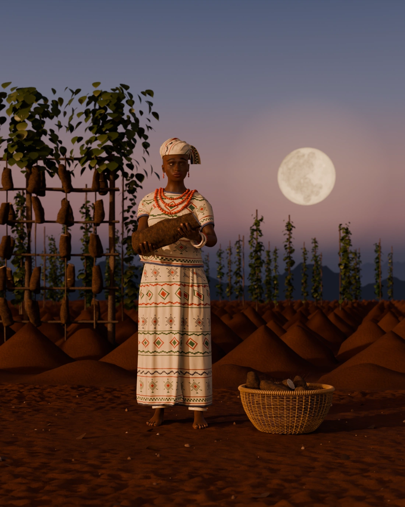
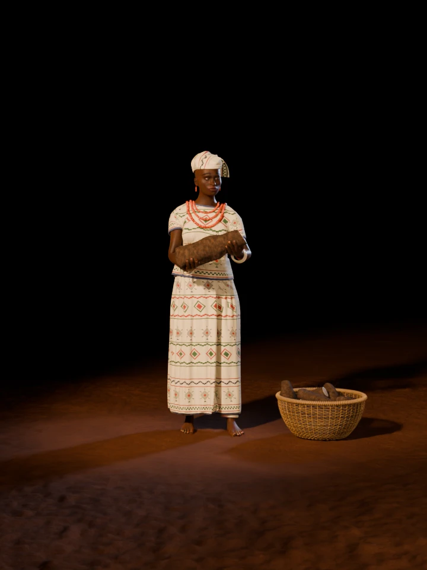

Igbo alụsị of yams and the harvest
A photoreal study of the Igbo yam deity on the evening of her festival: a matching Akwete wrapper, blouse and head tie, coral at her throat, ivory at her wrists and ankles, a new yam held out in both hands, and the full moon rising behind the barn.

Drag across the figure, use the slider, or focus it and press the arrow keys. Thirty-six views, ten degrees apart, rendered under the same lights as the figure turns.

Loading views 0 / 36
The yam across her palms, three strands of coral above it, and the wrapper's outer edge falling down the front.
The blouse hanging over the wrapper, and how far forward the tuber sits from her body.
The ichafu's folds running to the knot, and the bands of brocade going all the way round the cloth.
The knot and its two ends behind the ear, and the basket at her feet.
Select a picture to see it at full size.
Akwete · wrapper, blouse, head tie
Akwete is woven and sold in identical pairs. One cloth is the wrapper, the other may become a blouse, and here the head tie comes from the same weave. Both garments are simulated: the blouse starts out on the body with the arms lifted and falls into its folds as they come down.
Source: Wikipedia: Akwete cloth
Ji · Dioscorea rotundata
New yams may not be eaten until her rite is done. A large tuber often weighs 5 to 10 kg; this one is 41 cm long and 14 cm across, about 4 kg by volume, so that she can plausibly hold it out. Each finger was closed joint by joint until it came to rest on the tuber. The slanting cut that shows the white flesh is this study's.
Sources: Wikipedia: Ahia Njoku, FAO Bulletin 59
Head tie · tied flat
A headcloth tied flat on the head, as an ichafu is, rather than the tall folded wrap of her gallery figure. Cloth pulled to a knot folds toward the knot, so every pleat here is worked out around it.
Large coral · three strands
Igbo women wear large coral at the neck and wrists and as earrings. Each of the 235 beads has its own shape and tint.
Supplementary weft · 4.2 mm grid
The motifs are threads floating on a warp-faced ground, counted out on a grid the way a weaver counts them, so they catch the light on their own. Ikaki the tortoise, the saw, draughts and the lozenge.
Sources: The Met, Wikipedia: Akwete cloth
Cane · ten tubers
Forty-six stakes and twenty-seven rows of weft, each strand modelled. The yams were dropped in under rigid-body physics, so they lie the way a heap lies.
This study's own, after the gallery figure.
Ivory · odu ukwu at the ankle
Ivory at the wrists is odu aka and at the ankles odu ukwu, the regalia of the women of the Otu Odu society. The hem shows the draughts border.
Posts, cross members, raffia
Posts 5 to 10 cm thick about a metre apart, lighter cross members, and each tuber tied on by itself. Shoots from live poles can be the only shade a barn has.
Source: FAO Bulletin 59
Many alụsị are understood as unseen forces, and the sources here describe no image of Ahiajoku at all. This figure is an interpretation in Igbo dress, not a cult image. This list keeps the two apart.
The body starts from MakeHuman's free base mesh, shaped with its targets and rigged. The arms and legs were solved to target positions, and each finger was closed joint by joint until it came to rest on the yam.
The wrapper is one cloth wound round the hips, with its outer edge lying down the front. The blouse is cut from the body itself, loosened, and simulated while the arms come down to hold the yam, so its folds come from that movement.
The cloth's pattern is laid out on a weaver's grid, float by float. The ichafu is a surface lifted off the skull, with its pleats worked out around the knot. The coral is laid on the chest as three nested ovals, and the yams in the basket were dropped in under rigid-body physics.
Every stage is a Python script in 3d/ahiajoku/blender/, using the toolkit in 3d/toolkit/, and the finished scene is 3d/ahiajoku/ahiajoku.blend.
| Wrapper cloth, simulated vertices | 27,848 |
|---|---|
| Blouse cloth, simulated vertices | 26,530 |
| Simulated frames for each | 110 |
| Body mesh vertices, before smoothing | 13,380 |
| Coral beads | 235 |
| Brow and lash curves | 2,764 |
| Scalp curves, behind the ears and at the nape | 5,703 |
| Yam rootlet curves | 1,220 |
| Tubers: hands / basket / barn | 1 / 10 / 125 |
| Staked yam plants in the field | 415 |
| Samples per pixel, stills / turntable | 96 / 32 |